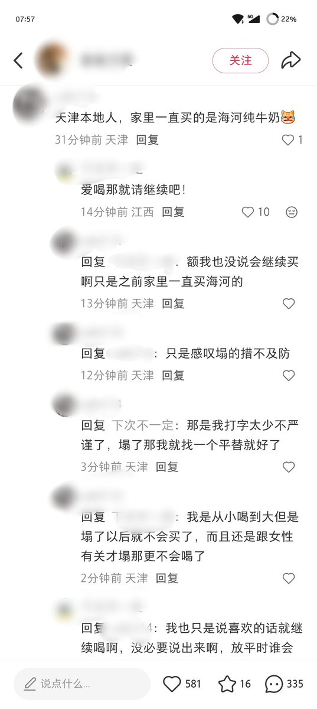
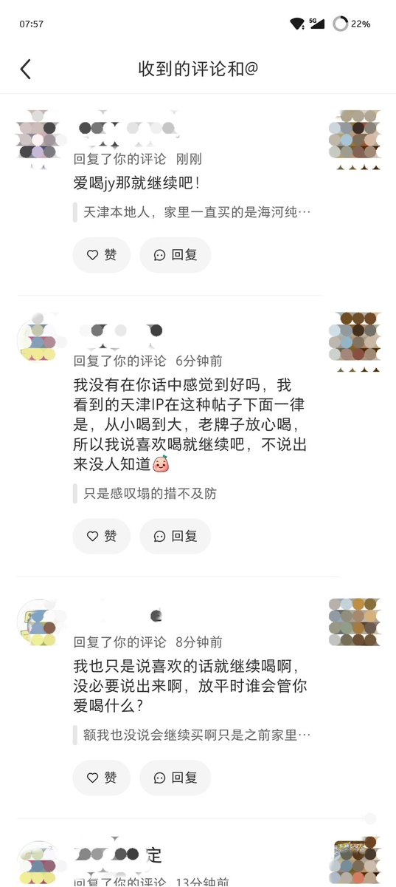
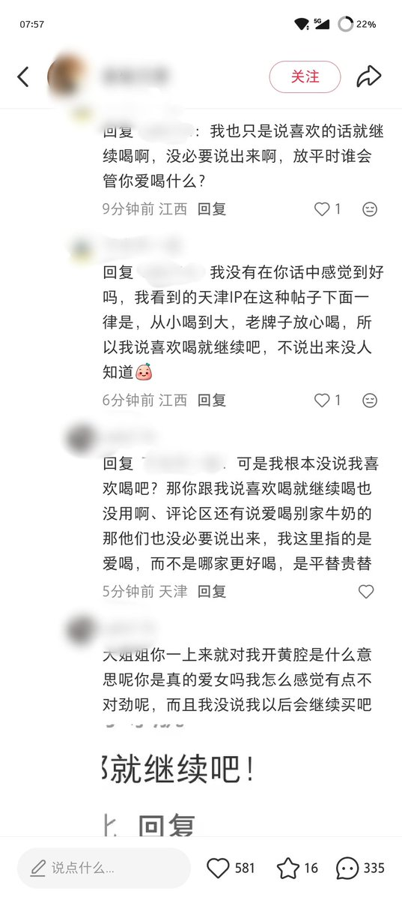
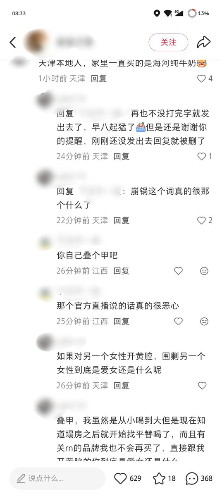

也有人维护过我，对那个发喝精液的人说，我只是发了一条的评论不至于这样吧，还有人对那个说爱喝就就继续吧的人说，她只是发了一个从小喝到大家里也爱买这个牌子又不是代表以后会一直喝一直买，这个这帮子女拳在解释完之后就跑路了😂完全不提对女性围剿这件事，隐性厌女是不知道的，阴阳怪气是必须的





不知道你们知不知道海河牛奶男主播的事情，我在小红书相关帖子底下发了一句评论天津本地人，家里一直买的海河牛奶，我承认这种立场不明的评论会有误会是我的锅，但是后面有人回复我，我也跟他解释了可是还是有人跟我说爱喝精液的话就继续吧，对另一个女性的围剿到底是为什么？我的表达能力有限，请看图 https://t.co/N9Layx0pHR